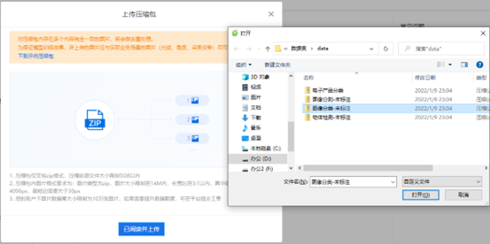
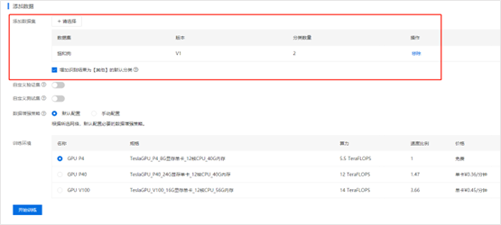

任务1.1.3 探究新职业-人工智能训练师#
任务描述#
查阅人工智能训练师职业标准以及从业人员的新闻报道和工作分享资料，了解人工智能训练师这个新职业的岗位要求和行业现状，理解人工智能训练师的典型工作任务，在百度easyDL平台实践体验新职业的工作流程（如图1.1.3.1所示），完成图像分类的数据处理制作数据集、进行模型训练和模型校验，最后在公有云完成部署生成H5二维码（如图1.1.3.2所示）。
图1.1.3.1 easyDL人工智能模型训练流程
图1.1.3.2 图像分类模型应用H5体验程序
学习目标#
知识链接#
人工智能技术发展让我们的生产生活发生了巨大的变化，人工智能训练师是近年来随着AI技术广泛应用而产生的新职业，2020年2月，“人工智能训练师”正式成为新职业并纳入国家职业分类目录。
一、人工智能训练师#
从数据标注到智能系统设计，所有与AI训练有关的职业都可以被称为“人工智能训练师”，包含数据标注员、人工智能算法测试员两个工种，按照《人工智能训练师国家职业技能标准》从低到高一共分为5级：五级/初级工、四级/中级工、三级/高级工、二级/技师、一级/高级技师。
人工智能训练师的其主要任务包括以下五个方面：
(1) 标注和加工图片、文字、语音等业务的原始数据；
(2) 分析提炼专业领域特征，训练和评测人工智能产品相关算法、功能和性能；
(3) 设计人工智能产品的交互流程和应用解决方案；
(4) 监控、分析、管理人工智能产品应用数据；
(5) 调整、优化人工智能产品参数和配置。
简而言之，人工智能训练师的工作就是让AI更“懂”人类，他们根据客户的需求,将数据“喂”给机器人,并不断调教优化机器人,使其“通情理、懂人性”,更好地为人类服务。我们熟悉的天猫精灵、百度小度、智能客服等智能产品背后都有人工智能训练师的功劳。随着人工智能时代的到来,各行各业都在进行智能化升级,对人工智能训练师的需求量日益增长，人工智能训练师的规模将迎来爆发式增长，预计2022年，国内外相关从业人员有望达到500万。
二、人工智能训练师典型工作任务#
1.数据标注#
数据标注是使用工具对未经处理的图片、文本、语音及其他原始数据进行加工处理，并进一步转换为机器可识别信息的过程。加州科技大学校长曾表示，机器识别事物主要是通过物体的一些特征进行识别，而被识别的物体还需要通过数据标注才能让机器知道这个物体是什么。简单来说，数据标注就是数据标注人员借助标记工具对原始数据进行加工的一种行为。
数据标注分为4种基本类型，包括图像类、文本类、语音类及其他类。图像类数据标注主要包括矩形拉框、多边形拉框、关键点标注等标注形式；文本类数据标注主要包括情感标注、实体标注等标注形式；语音类数据标注包括语音转写等标注形式；而其他类数据标注则形式比较灵活与多变。
当下的人工智能也被称为数据智能。因为要想实现人工智能，需要投入极大量的训练数据。因此数据也被称作人工智能的血液。但是对于深度学习来讲，光有数据是远远不够的，数据只有加上标签，才能用于机器的训练、学习和进化。所以，数据标注工作就显得十分重要，这也是数据标注员被称作“人工智能背后的人工”的原因。
2.模型训练#
人工智能的模型本质上就是训练机器用不同的算法来掌握一个个不同的规则，然后能举一反三。我们可以把机器想像成一个小孩子，人工智能训练师通过“喂”他猫和狗的图像数据教他认识哪个动物是狗哪个是猫，久而久之，小孩子就能产生认知模式，有了这个认知模式就能辨认出猫和狗了。这个学习过程就叫模型训练，训练产生的认知模式就是猫狗分类模型。小孩子有了猫狗分类模型后，跑过来一只动物，我们问他“这是狗吗？”，他会回答是或者否，这个过程就是模型的应用-预测。
三、人工智能训练师工作流程体验#
随着 AI 落地的深入，不少企业发现，在越来越多的实际应用场景中，需要结合场景数据进行模型的定制。有研究显示，这样的定制化需求占比高达 86%。但与之相矛盾的是，大部分中小企业并不具备专业的算法开发能力，导致开发定制 AI 模型对于企业来说难以实现。针对这种情况，百度、华为、腾讯、阿里等AI头部企业都提供了创建模型-上传并标注数据-训练并校验模型效果-模型部署的一站式 AI 服务，实现了全流程自动化，用户只需要根据平台的提示进行操作即可，让人工智能零基础的用户也能快速实现人工智能应用。
下面以百度深度学习定制easyDL平台来体验人工智能训练师从数据标注到模型部署的整个工作流程。easyDL平台根据目标客户的应用场景及深度学习的技术方向，开放了6个模型类型：EasyDL图像、EasyDL文本、EasyDL语音、EasyDL OCR、EasyDL视频，以及EasyDL结构化数据。本次任务我们选择EasyDL图像，通过训练简易的图像分类模型，实现猫和狗的分类。将通过创建图像分类模型、上传数据、标注数据、训练模型、校验和发布H5五个个步骤进行，在该过程中不追求模型的最终效果，而是着重于基本的操作。
1. 创建图像分类模型#
1-1：打开 EasyDL图像官网：https://ai.baidu.com/easydl/vision/，进入 EasyDL图像页面，如图1.1.3.3所示。
图1.1.3.3 EasyDL 图像页
1-2：单击图1.1.3.4中“立即使用”按钮，在弹出来的“选择模型类型”对话框中选择“图像分类”选项（进入登录界面，输入账号和密码。没注册的用户需要先注册），如图1.1.3.4所示。
图1.1.3.4 easyDL图像操作“选择模型类型”对话框
1-3：进入图像分类模型管理界面后（如图1.1.3.5所示），在左侧的导航栏中，选择“我的模型”标签页后单击“创建模型”按钮，进入信息填写界面。
图1.1.3.5 “我的模型”标签页
1-4：在页面填入“模型名称”“邮箱地址”“联系方式”和功能描述，选择“模型归属”，所有的星号选项必须填写。完成效果参考图1.1.3.6。
图1.1.3.6 “创建模型”页面
1-4：信息填写完成后，单击“下一步”按钮即可创建成功。在左侧导航栏“我的模型”标签页中即可看到所创建的模型，如图1.1.3.7所示。
图1.1.3.7 创建的模型列表
2.上传数据#
2-1：选择左侧导航栏“数据总览”标签页，单击“创建数据集”按钮，进入创建数据集信息填写页面，参见图1.1.3.8。
图1.1.3.8 数据总览-页面
2-2：按照提示填写信息。在“数据集名称”一栏可输入你自己取的数据集名称。其他均为默认项，无需修改，完成后参见图1.1.3.9。信息填写完成后，单击“完成”按钮。
图1.1.3.9 创建数据集页面
2-3：数据集创建成功后，在界面中将出现该模型的数据集信息，包括版本、数据集ID、数据量、标注类型、标注状态、清洗状态等，参见图1.1.3.10。
图1.1.3.10 数据集列表
2-4：单击图1.1.3.10中的“导入”链接，进入数据导入界面，在“导入数据-数据标注状态”一栏选择“无标注信息”选项，在“导入方式”一栏选择“本地导入-上传压缩包”选项，效果如图1.1.3.11所示。单击上传压缩包按钮，进入上传压缩包页面，如图1.1.3.12所示。单击“已阅读并上传”按钮，选择本地保存的数据压缩文件，参见图1.1.3.13，选择打开上传成功后如图1.1.3.14所示，单击“确认并返回”按钮。
图1.1.3.11 导入数据页面
图1.1.3.12 上传压缩包页面

图1.1.3.13 上传压缩文件
图1.1.3.14压缩文件上传成功
2-5：数据开始导入，数据列表效果参见图1.1.3.15，等待数据全部导入。
图1.1.3.15 数据导入状态
3.数据标注#
3-1：数据集导入完成后，可以看到导入状态已更新为“已完成”，数据量、标注状态操作都有变化，如图1.1.3.16所示。单击该数据集右侧操作栏下的“查看与标注”按钮，进入标注界面。
图1.1.3.16导入数据集后的数据列表
3-2：添加标签“猫”和“狗”：单击图15中的添加标签，输入猫，如图1.1.3.18所示，单击“确定”按钮，标签就添加成功了，效果参见图1.1.3.19。相同的方法添加一个“狗”标签，完成后如图1.1.3.20所示。
图1.1.3.17 添加标签页面
图1.1.3.18 添加“猫”标签
图1.1.3.19 添加“猫”标签成功
图1.1.3.20 添加“猫”“狗”标签成功
3-3：标签添加完成后，即可进行数据标注。单击界面右上方的“批量标注”按钮，如图1.1.3.21所示，进入标注界面。
图1.1.3.21 选择批量标注
3-4：选中所有代表狗的图像，单击右侧标签栏下对应的标签名“狗”，参见图1.1.3.22，即可进行标注。此处要注意不可选错图像，若标注错误，会严重影响模型的训练效果，
图1.1.3.22 批量标注“狗”图
3-5：相同的方法完成“猫”图像的标注，全部标注完成后的效果可参考图1.1.3.23。回到数据总览页面，标注状态如图1.1.3.24所示。
图1.1.3.23 标注完成状态
图1.1.3.24 数据标注完成后的数据列表
4.训练模型#
4-1：选择模型训练，进入模型训练页面，选择模型、选择算法、添加数据集，参考图1.1.3.25。单击“添加数据集-+请选择”进入添加数据集页面，如图1.1.3.26所示。单击图1.1.3.26中所示的+号进行数据添加，图1.1.3.27是添加猫、狗两类数据的效果。
图1.1.3.25 训练模型页面
图1.1.3.26 添加数据集页面
图1.1.3.27 添加猫狗数据集
4-1：添加完数据集，训练模型页面的添加数据项效果如图1.1.3.28所示，其他参数默认，单击开始训练。

图1.1.3.28添加数据集后的训练模型页面
4-2：在弹出的对话框中，单击“继续训练”按钮，即可进行训练，如图1.1.3.29所示。
图1.1.3.29单击“继续训练”按钮
4-3：单击“训练状态”-“训练中”“训练状态-训练中”旁的感叹号图标，可查看训练进度，如图1.1.3.30所示，还可以设置在模型训练完成后，发送短信至个人手机号。训练时间与数据量大小有关，本次训练大约耗时3-15分钟，训练完成后的效果如图1.1.3.31所示。
图1.1.3.30 模型“训练中”状态
图1.1.3.31 模型“训练完成”状态
4-4：在版本配置界面，可以查看该训练任务的开始时间、任务时长、训练时长及训练算法等基本信息。在“训练数据集”一栏，可以查看各分类的训练效果，如图1.1.3.32所示。
图1.1.3.32 模型评估报告页面
5.校验和发布#
5-1：单击图29中的“校验”链接，进入校验模型界面，单击“启动校验”按钮，单击中间的“点击添加图片”按钮，选择事先准备好的一张非数据集中的图像，等待校验，如图1.1.3.33所示。

图1.1.3.33 校验页面
5-2：校验完成后，在界面中可以看到模型的识别结果，在界面右侧可以查看预测分类及其对应的置信度，效果参考图1.1.3.34。
图1.1.3.34 校验结果页面
5-3：选择“发布模型”进入发布模型页面，填写服务器名称和接口地址，提交申请，参考图1.1.3.35。进入发布状态。
图1.1.3.35 发布模型页面
5-4：回到我的模型列表中，模型服务状态为“发布中”，如图1.1.3.36所示。

图1.1.3.36模型“发布中”状态
5-5：模型发布成功后，服务状态为“已发布”，同时操作会增加“体验H5”,如图1.1.3.36所示。单击“体验H5”，进入图1.1.3.38所示的页面，选择你的调用APP，单击“下一步”按钮进入“体验H5-自定义样式”页面，填入信息，参考图1.1.3.39，单击“生成H5”按钮。
图1.1.3.37 模型“已发布”状态
图1.1.3.38 体验H5页面
图1.1.3.39 “体验H5-自定义样式”页面
5-6： 进入“体验H5-完成”页面，如图1.1.3.40所示。拿起你的手机，扫二维码进行测试吧，效果参考图1.1.3.41。
图1.1.3.40“体验H5-完成”页面
图1.1.3.41 猫狗识别H5界面
素质素养养成#
(1) 在了解人工智能训练师的定义、岗位任务和对社会的作用过程中培养学生技术服务人类的精神，认可人工智能训练师新职业。
(2) 在体验人工智能训练师的工作流程，体会每个任务对完成项目的作用，培养工程思维的科学精神；
(3) 通过人工智能抗疫的巨大作用、数据标注服务人脸寻亲等培养学生服务社会的公共参与意识；
(4) 通过学生参与工作室、创新应用类项目培养学生遵守合同的法治意识。
任务实施#
任务工作单1：认知新职业-人工智能训练师
组号：___________ 姓名：___________ 学号：___________ 检索号：___________
引导问题：#
（1）查找资料总结人工智能训练师职业标准和岗位要求。
—————————————————————————————————————————————————————————
（2）讨论总结哪些行业、领域需要人工智能智训练师？
—————————————————————————————————————————————————————————
任务工作单2：认知人工智能训练师典型工作任务
组号：___________ 姓名：___________ 学号：___________ 检索号：___________
引导问题：#
（1）数据标注是什么？数据标注与人工智能有什么关系？
—————————————————————————————————————————————————————————
（2）什么是人工智能模型训练，模型的作用？
—————————————————————————————————————————————————————————
任务工作单3：人工智能训练师体验
组号：___________ 姓名：___________ 学号：___________ 检索号：___________
引导问题：#
（1）通过easyDL新手教程体验基于人工智能服务平台进行数据准备和模型训练的全过程，公共有哪些步骤？最后截图分享你的H5程序体验结果。
—————————————————————————————————————————————————————————
（2）下载猫狗图像分类数据，登录百度DL平台完成数据标注和模型训练：https://ai.baidu.com/easydl/?track=cp:ainsem|pf:pc|pp:easyDL|pu:easyDL-moxing|ci:|kw:10064002。截图模型训练完成的状态。
—————————————————————————————————————————————————————————
（3）评估你训练的猫狗分类模型，截图保存测评结果记录准确率。尝试模型调优，记录你的过程和结果。
—————————————————————————————————————————————————————————
（4）对猫狗模型进行校验，至少上传三张不同的图片进行检验。截图并保存结果。
—————————————————————————————————————————————————————————
（5）发布猫狗分类模型，记录服务详情，部署应用H5体验。截图保存。
—————————————————————————————————————————————————————————
任务工作单4：人工智能训练师学习汇报
组号：___________ 姓名：___________ 学号：___________ 检索号：___________
引导问题：#
（1）每组推荐一个同学汇报：“有多少智能就有多少人工”，你们是怎么理解的？请结合前面数据标注、模型训练和测评的结果进行分享。
—————————————————————————————————————————————————————————
（2）调优成功的小组展示模型优化的方法。教师总结。
—————————————————————————————————————————————————————————
任务工作单5：人工训练师工作过程实践
组号：___________ 姓名：___________ 学号：___________ 检索号：___________
引导问题：#
（1）小组基于平台继续完成模型定制过程，模型效果不满意的小组进一步优化模型。已经完成的小组可以体验华为modelarts平台等其他人工智能服务平台完成数据标注和模型训练和发布。
—————————————————————————————————————————————————————————
（2）总结新职业人工智能训练师学习过程的不足和优点。
—————————————————————————————————————————————————————————